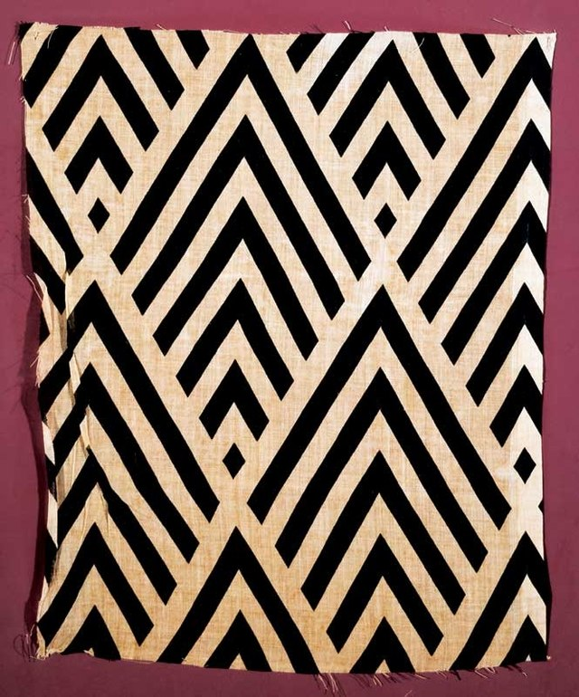

기하학 + 정치 커뮤니케이션
구성주의(Constructivism)는 러시아 아방가르드 내부에서 발전한 독립 운동으로, 블라디미르 타틀린의 재료 실험과 반부조를 중요한 출발점으로 삼아 1920년대에는 예술을 독립된 미술품에 가두지 않고 구조·기능·생산·정보·사회생활에 적용하려 했다. 회화보다 건축·제품·포스터·타이포그래피·사진·직물·무대가 점점 중요해진 것이 핵심이다.
나무·금속·유리·종이의 실제 성질과 결합방식을 탐구한다.
화면에 묘사하기보다 실제 공간에서 조립·매달고 연결한다.
개인 감정의 표현자보다 기술자·디자이너·생산자의 역할을 강조한다.
포스터·출판·사진·직물·가구·무대·건축으로 확장한다.
새로운 사회의 정보전달과 생산환경에 실제로 작동하는 형태를 추구한다.
타틀린의 1910년대 ‘반부조(counter-reliefs)’는 나무·금속·유리 같은 실제 재료를 벽 모서리와 공간에 직접 설치했다. 이것은 화면 안에 물체를 그리는 대신 재료 자체의 긴장·무게·결합을 작품의 내용으로 만든 급진적 변화였다.
색과 형태를 캔버스 안에서 조화롭게 조직하는 전통적 미술의 문제.
형태가 재료·힘·기능·제작 과정에서 나와야 한다는 구성주의적 태도.
작가가 독립 미술품보다 출판·직물·사진·무대·제품 등 사회적 생산에 참여한다.

알렉산드르 로드첸코는 1921년 빨강·노랑·파랑의 단색 회화 세 점을 전시하며 회화를 기본색과 평면까지 환원했다. 이후 그는 사진, 포토몽타주, 광고, 책 디자인 등으로 활동영역을 넓혔다. 이는 구성주의의 핵심 이동—자율적인 회화에서 시각 커뮤니케이션과 생산으로—을 잘 보여준다.
| 항목 | 절대주의 | 구성주의 |
|---|---|---|
| 대표 | 말레비치 | 타틀린, 로드첸코, 포포바, 스테파노바, 리시츠키 |
| 핵심 질문 | “대상 없이 순수한 회화가 가능한가?” | “형태가 실제 사회와 생산에서 어떻게 작동할 수 있는가?” |
| 기하학 | 순수 감각·비대상 공간 | 구조·기능·정보의 조직 |
| 재료 | 주로 회화적 색·평면 | 금속·목재·유리·종이·사진·직물 등 실제 재료 |
| 매체의 방향 | 회화의 자율성 | 회화에서 건축·디자인·사진·생산으로 |
| 정신성 | 상대적으로 강함 | 물질·기능·사회적 효용을 더 강조 |
| 국가·지역·세부 사조 | 지역적 특징 | 대표 화가·제작자 |
|---|---|---|
| 모스크바·페트로그라드 — 구성주의·생산주의 |
| 블라디미르 타틀린, 알렉산드르 로드첸코, 류보프 포포바, 바르바라 스테파노바 |
| 비텝스크·모스크바 — 그래픽·공간 실험 |
| 엘 리시츠키 |
| 독일·파리·영국 — 국제 구성주의 |
| 나움 가보, 앙투안 페브스너 |
구성주의는 추상적 조형 실험에서 출발했지만 곧 “예술을 삶과 생산 속으로” 옮기려는 디자인·건축·선전의 운동이 되었다.
본문에 이름이 등장하는 주요 화가는 아래처럼 대표작 한 점과 함께 읽어야 한다. 작품은 해당 사조의 핵심 특징을 실제 화면에서 확인하도록 고른 것이다.
기하학적 형태를 정치적 커뮤니케이션으로 전환한 구성주의 그래픽의 대표작이다.
회화의 기하학적 구성을 직물의 반복 패턴과 실제 생산으로 옮긴다.
기념물은 조각이 아니라 통신, 회의, 정치 운동을 담는 역동적 구조로 상상된다.
사진, 활자, 강한 대각선을 결합해 구성주의의 시각 언어를 대중 매체로 옮긴다.
예술가의 역할을 일상복과 신체 활동의 기능적 설계로 확장한 생산주의의 사례다.
덩어리를 비워 공간과 선의 관계를 드러내며 구성주의 조각의 국제적 방향을 제시한다.
선과 투명한 재료로 시간·공간·구조를 조각의 주제로 만든다.